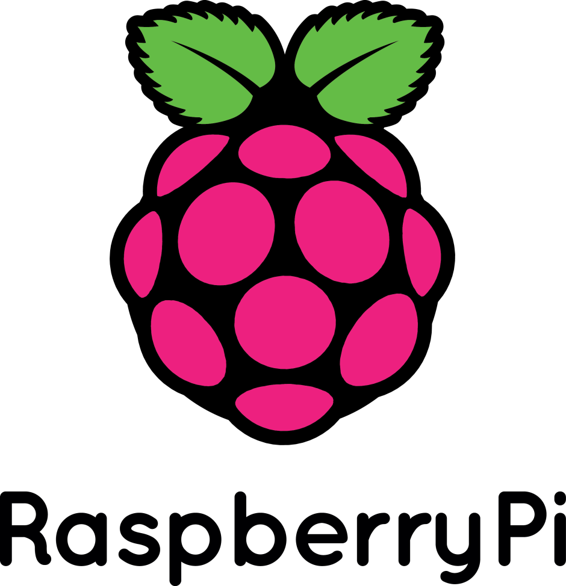
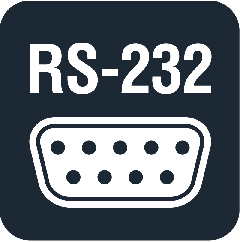
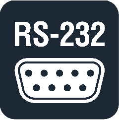
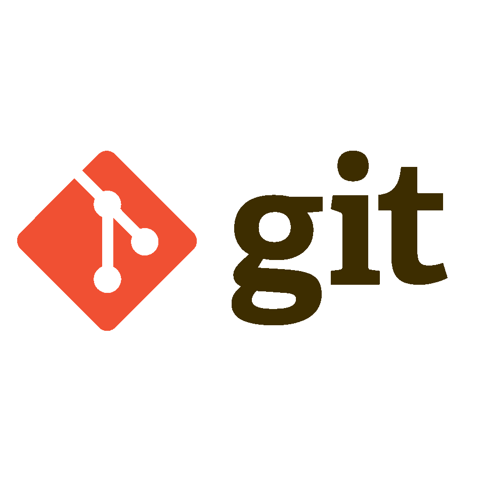
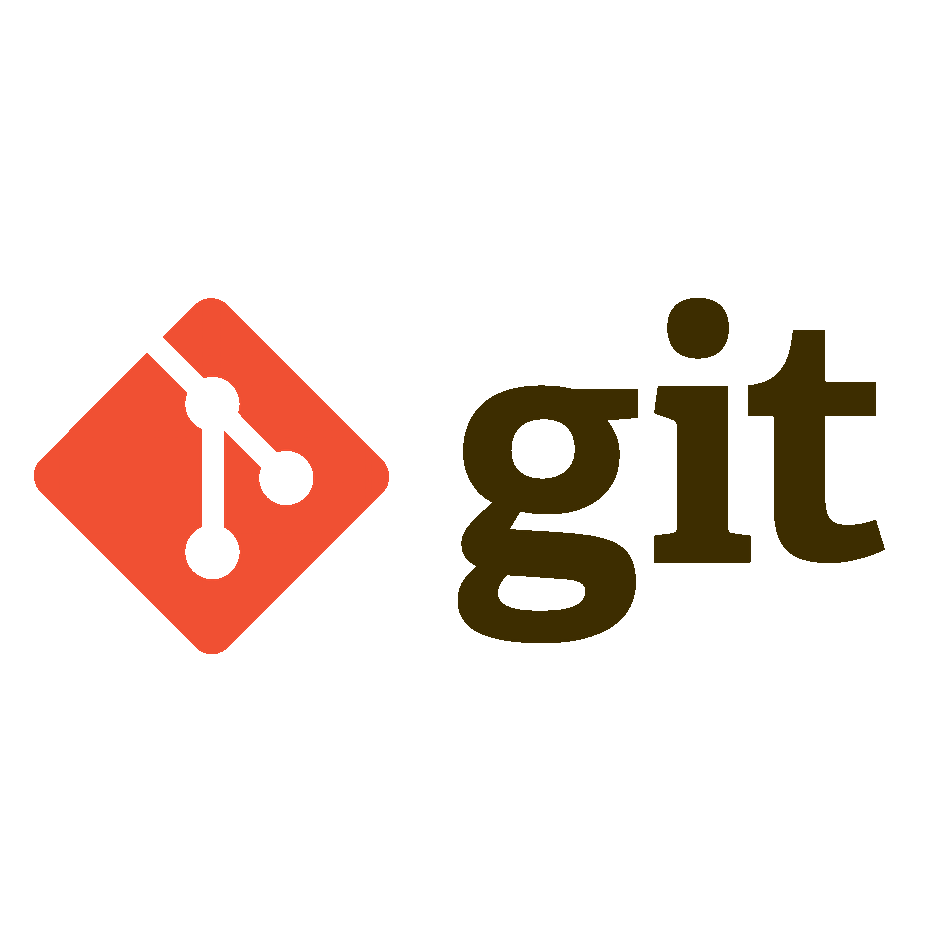

 



 


> Embedded Systems Software Engineer
I'm a electronic engineer with 20+ years experience in software development for testing Electronic Control
Units (ECUs) and having fun in design Embedded Linux Systems (architecture, UI design, hardware and software) mainly for automotive applications such as
customized cluster and infotainment based on customer specification, and for IoT devices as well.
I specialize in the gray area between software and hardware - embedded systems - where you need a programmer and an engineer, all in the same person.
In portfolio page, you'll find a selection of my previous projects, so don't forget to have a look at it for more details ; )
> Expertise :
I blend my educational background in electronics, with the experience done in the Automotive industry, and the passion for
the software development and technology in general.
> Services :
*** Customized Car Cluster/Infotainment realization ***
Showcar and one-off vehicles customized cluster and infotainment realization, including UI design, architecture definition,
and sw development, showing real time typical car metrics (RPM, Speed, vehicle lights, HVAC commands, external cameras, G-force, and so on...)
acquired from car CAN bus and external sensors
*** Communication protocol gateways ***
Realization of ECU based on commercial HW that receive messages from CAN bus, and re-route the messages on other
communication line (serial / Bluetooth / Wifi) or do some kind of actuation.
*** Remote controlled Smartbox ***
Remote control implemented via Bluetooth on Android Smartphone, aimed to control an actuation smartbox.
(eg. switch on car low beam lights, remotely commanded by a smartphone)
*** interactive GUI for digital kiosks ***
GUI development for Desktop application (Win/Linux) or Single Board Computer, based on customer storyboards or graphics, including
multimedia (MP3 player, video player, camera streaming) and logic.
UI/UX Graphic Design / Win-Linux Desktop and Raspberry Pi GUI Developer / HMI designer with customized widgets according to customer needs
*** Website design & implementation ***
Custom web design and full-stack software development tailored to your needs.
Whether you're launching a personal blog, a business website, or a complex web application, I can help you design,
build, and deploy a modern, responsive, and high-performance solution.
> Keywords :
#Automotive, #CAN bus Expert, #ECU Testing, #Raspberry Pi, #Arduino, #Linux Embedded systems, #SW development, #UX/UI Designer, #Website development.